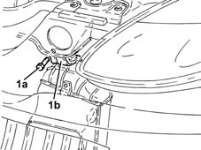
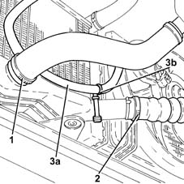
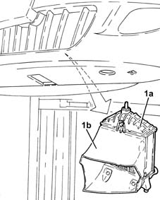
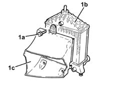

1048B50 turbo charger intercooler - r + r
- Path
- Procedures > 10 ENGINE > 1048 ENGINE AIR SUPPLY CIRCUIT > 1048B pressure air circuit > 1048B50 turbo charger intercooler - r + r
- Kind
- repair procedure (removal / refitting; the operation number is the code)
- Applies to
- engines: 1.3 JTD; all production periods
- Interactive page
- https://sloeber94.github.io/elrnDB-lYpsln/en/#/2429033
Applies to: engines: 1.3 JTD; all production periods
 Removing
Removing
 Refitting
RefittingPosition the vehicle on the ramp.
Proceed with removal .
1. Undo the bolt (1a) and remove the upper bracket (1b) fixing the supercharging air/air heat exchanger.

Applies to: engines: 1.3 JTD; all production periods
1. Loosen the band and disconnect the air supply hose between the turbocharger and the heat exchanger, heat exchanger side.
2. Loosen the band and disconnect the air supply hose between the heat exchanger and the rigid pipe, heat exchanger side.
3. Release the electrical wiring (3a) from the fastening (3b) on the supercharging air/air heat exchanger.

Applies to: engines: 1.3 JTD; all production periods
1. Remove the supercharging air/air heat exchanger (1a), complete with duct (1b), after having released the lower pins from the lower radiator crossmember.

Applies to: engines: 1.3 JTD; all production periods
1. Working at the bench, undo the bolts (1a) and separate the supercharging air/air heat exchanger (1b) from the duct (1c).

Applies to: engines: 1.3 JTD; all production periods
Refitting
RemovingPlace the supercharging air/air heat exchanger in its housing and secure it using the bolts.
Place the supercharging air/air heat exchanger, complete with duct, in its housing, taking care to fit the lower pins in the housings in the lower radiator crossmember.
Secure the electrical wiring using the fastening on the supercharging air/air heat exchanger.
Connect the air supply hose between the heat exchanger and the rigid pipe, heat exchanger side and tighten the band.
Connect the air supply hose between the turbocharger and the heat exchanger, heat exchanger side.
Place the supercharging air/air heat exchanger mounting bracket in its housing and fasten it using the bolt.
Proceed with refitting .
Remove the car from the ramps.